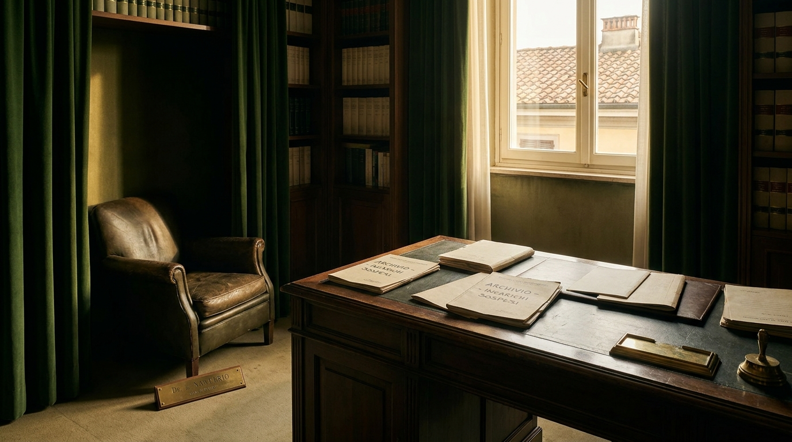

Privazione di incarichi e isolamento sul lavoro: quando è mobbing
L'isolamento sistematico e la privazione di incarichi possono integrare mobbing e fondare il risarcimento del danno. Ma la giurisprudenza di legittimità richiede un elemento decisivo: il disegno persecutorio unitario. Senza di esso, condotte comunque lesive possono al più rientrare nello straining. Una distinzione che cambia la prova, la qualificazione e le voci di danno azionabili.

Il caso
Un lavoratore lasciato senza mansioni, escluso dalle dinamiche dell'ufficio, collocato in un ambiente materialmente degradato. Da questo quadro la giurisprudenza di legittimità ha riconosciuto, in più occasioni, l'esistenza di un mobbing fonte di danno alla salute, fino alla depressione.
Il punto, però, non è il singolo comportamento. È la cornice che li tiene insieme. Ed è qui che si gioca la qualificazione giuridica.
Inquadramento normativo
Il perno è l'art. 2087 del codice civile, norma di chiusura del sistema: impone al datore di lavoro di adottare tutte le misure necessarie a tutelare l'integrità fisica e la personalità morale del lavoratore. È una clausola generale: copre anche condotte non espressamente vietate da altre norme, purché lesive della salute o della dignità.
Accanto ad essa rileva l'art. 2103 c.c., che disciplina le mansioni. Lo svuotamento del ruolo — l'assenza totale di incarichi — può integrare un demansionamento illegittimo, autonomamente risarcibile a prescindere dalla qualificazione come mobbing.
La giurisprudenza di legittimità ha precisato che il mobbing non si riduce alla somma di episodi sgradevoli. Richiede un elemento soggettivo unificante: l'intento persecutorio, ossia un disegno vessatorio unitario che lega le singole condotte in una strategia diretta a emarginare o espellere il lavoratore. È l'aspetto più controverso e più difficile da provare.
Mobbing o straining: la differenza che conta
Proprio sull'elemento intenzionale si fonda la distinzione, oggi centrale, tra mobbing e straining.
Lo straining è una forma attenuata: una situazione di stress forzato, conflittuale o di pressione lavorativa, che produce effetti dannosi sulla salute anche senza la reiterazione sistematica e il disegno persecutorio tipici del mobbing. La Cassazione ha valorizzato questa figura per offrire tutela anche quando manchi la prova del progetto vessatorio unitario, ma residui una condotta datoriale comunque idonea a ledere salute e dignità in violazione dell'art. 2087 c.c.
In altri termini: dove non arriva il mobbing può arrivare lo straining. Per il lavoratore non è una sfumatura accademica, perché incide direttamente sull'onere probatorio.
Le voci di danno
La lesione non è unica. Vanno tenute distinte:
- il danno biologico, ossia il pregiudizio alla salute psicofisica medicalmente accertabile (la depressione reattiva, ad esempio);
- il danno morale, riferito alla sofferenza interiore patita;
- il danno alla professionalità, collegato allo svuotamento delle mansioni ex art. 2103 c.c., che compromette competenze, immagine professionale e prospettive di carriera.
Ciascuna voce va allegata e provata in modo specifico. Non si presume.
Cosa cambia nella pratica
Per il lavoratore, la qualificazione del fatto determina cosa deve dimostrare. Provare il mobbing significa ricostruire un disegno; agire per straining o per demansionamento può richiedere un perimetro probatorio diverso.
La prova resta l'aspetto più delicato. Pesano la durata e la frequenza delle condotte, il confronto con il trattamento riservato ad altri colleghi in posizione analoga, la documentazione sanitaria che colleghi il disturbo all'ambiente di lavoro.
Va anche detto, per equilibrio, che un episodio isolato non basta. E che le legittime scelte organizzative dell'impresa — riassetti, trasferimenti, ridistribuzione di compiti — non costituiscono di per sé condotta illecita, se proporzionate e prive di intento emarginante.
Per il datore, la responsabilità ex art. 2087 c.c. può essere affermata anche sulla base delle condizioni materiali dell'ambiente di lavoro, oltre che dei rapporti relazionali. La gestione del personale, quindi, è anche gestione del rischio da contenzioso.
Cosa fare in concreto
Per il lavoratore:
- Documenta date, fatti e contesto: annota cronologicamente episodi, comunicazioni, sottrazione di incarichi.
- Conserva email, ordini di servizio, organigrammi e ogni prova del confronto con il trattamento dei colleghi.
- Rivolgiti tempestivamente a un medico e fai certificare l'eventuale nesso con l'ambiente lavorativo.
Per il datore di lavoro:
- Verifica la coerenza e la proporzionalità delle scelte organizzative, documentandone le ragioni oggettive.
- Monitora clima interno e condizioni materiali delle postazioni, intervenendo sulle situazioni conflittuali prima che si cronicizzino.
La qualificazione di una vicenda come mobbing, straining o demansionamento dipende dall'analisi dei fatti concreti e non si presta a risposte standardizzate.
---
*Contributo informativo a cura di Tamburro & Partners - Avv. Giuseppe Tamburro. Non costituisce parere legale.*
Ogni storia di lavoro ha i suoi tempi.
Se gestisci HR e vuoi un confronto su contenzioso, ispezioni o licenziamenti, scrivi allo studio. Ti rispondiamo entro un giorno lavorativo.